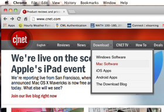
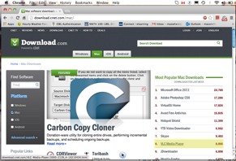
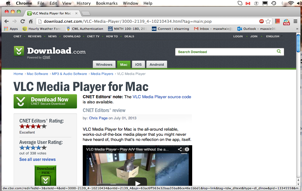
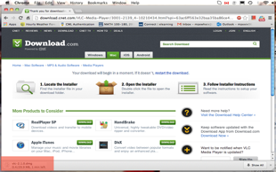
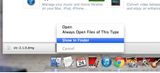
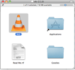
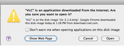
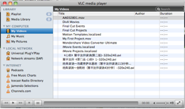

Instructions for Installing VLC Media Player
VLC Media Player is an application that lets you easily play music, watch videos, and browse photos on your computer. These instructions will show you how to download it from www.cnet.com website and install it on your Mac.
Find VLC Media Player
- Open the browser you prefer to use.
- Type www.cnet.com in the address field to open the website.
- On the menu bar, hover your mouse over Download. You will see five items in the drop-down menu.

- Click Mac Software. You will see a page with VLC Media Player on the right side of the page.

- Click VLC Media Player. You will see the download page for VLC Media Player.

- Click
 . Downloading starts.
. Downloading starts.

You can monitor the download progress with the indicator at the bottom left corner of the screen.
Start In progress Done
Install VLC Media Player
- Click the down arrow next to the file. A pop-up menu displays.

- Click Show in Finder. A finder window opens with downloaded file named vlc-2.1.0.dmg inside.
- Double click the file named vlc-.2.1.0.dmg. The VLC Media Player starts installing. When installation is finished, a start window displays.

- Double click VLC icon. A dialogue box displays to ask if you want to open the VLC Media player.

- Click Open button. The VLC Media Player will start.

Congratulations! You have successfully downloaded and installed the VLC Media Player on your Mac.
Now you are able to use VLC Media Player to play music, watch videos, and browse photos.